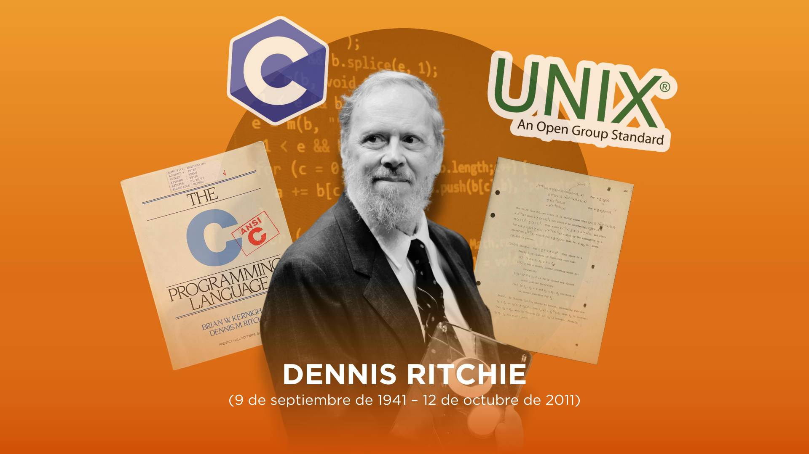

Pioneros de la Informática
Explora los relatos de quienes cambiaron la historia de la tecnología

James Gosling
Creador de Java

Grace Hopper
Pionera en programación

Richard Stallman
Defensor del software libre

Dennis Ritchie
Creador del lenguaje C

Ken Thompson
Innovador en sistemas operativos

Linus Torvalds
Creador de Linux

Dan Bricklin
Pionero de hojas de cálculo

Bjarne Stroustrup
Creador de C++

Bill Gates
Cofundador de Microsoft

Alan Turing
Padre de la computación

Tim Berners-Lee
Creador de la Web

Ada Lovelace
Primera programadora

Jean Bartik
Pionera en programación

John von Neumann
Visionario en computación
Donald Knuth
Maestro de algoritmos

Steve Jobs
Revolucionario tecnológico